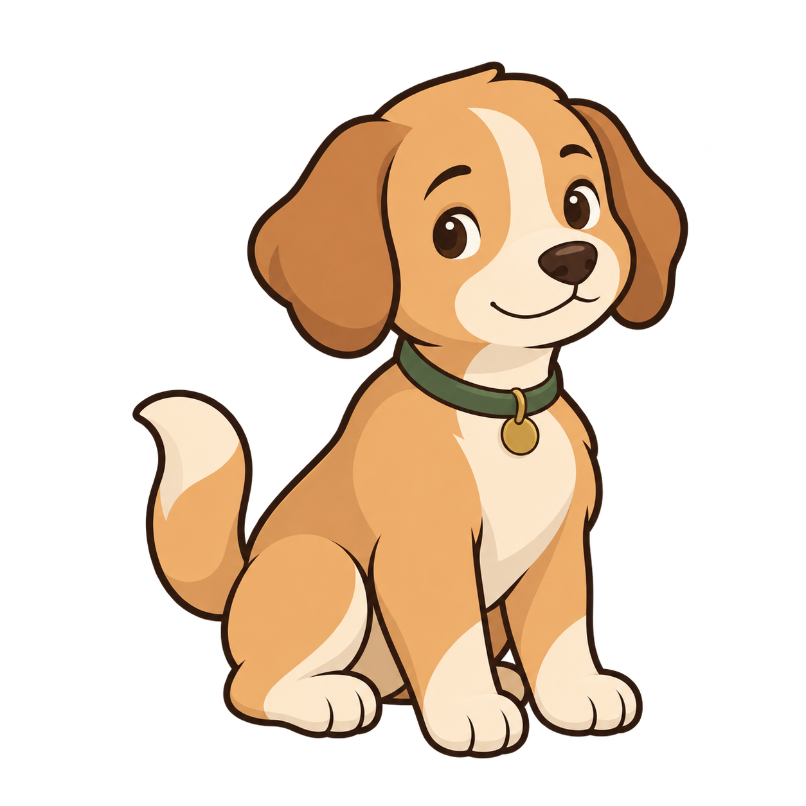

KODAX SPACE · CHARACTER STUDY
一只安静、能表达的小狗
统一造型与九种关键姿态 · 2026-10-17

暖杏色 · 奶油色 · 森林绿
让耳朵、头部和身体一起表达
保留小狗的亲近感，用清楚的轮廓与较少的细节适配小尺寸。思考、工作、等你确认和需要检查，分别设计姿态。
这里是静态关键姿态设计稿。点击下方姿态可查看真实小尺寸；还没有制作连续动画帧，切换姿态不能视为动画验收。
按实际使用尺寸查看
任务伴侣 · 待机我在这里，需要时点开就好。
制作下一阶段的标准
先验证小尺寸可读性。工作、抬爪等待和休息靠身体就能辨认；思考与需要检查还需要明确的文字状态，不能只靠微小的眉眼。
动画需要独立制作。从这些关键姿态补齐眨眼、抬头、摇尾与动作过渡的连续帧，校准同一基线、比例和运动轨迹；待机与完成动作要能自然回到原位。直接用几张姿态轮播会跳变。
旧两套可以替换。本页只评审新素材，正式产品尚未替换。以后围绕这一只角色制作一致的动作集；极简档使用静态姿态，减少动画和后台暂停策略继续有效。